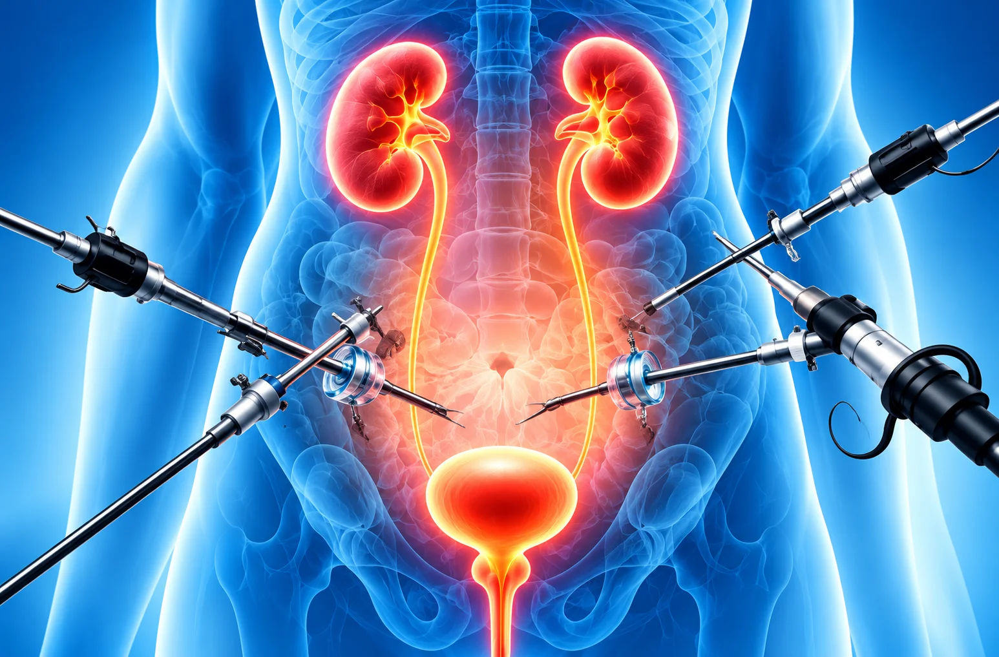

Laparoscopic Urological Surgeries
Minimally Invasive
Minimally Invasive
Urological Surgery
Advanced laparoscopic techniques for kidney, ureter, bladder and prostate conditions with smaller incisions and less pain.
Book Your AppointmentMinimally Invasive
Approach
Approach
Less
Pain
Pain
Advanced
Technology
Technology
Personalised
Treatment Plan
Treatment Plan

UnderstandingLaparoscopic
Laparoscopic
Urological Surgeries
Laparoscopic surgery is a minimally invasive approach used to treat conditions of the kidney, ureter, bladder and prostate.
It is performed with small incisions using a camera and specialised instruments.
Common Indications
Laparoscopic surgery may be recommended for conditions such as:
- Kidney tumours or masses
- Prostate enlargement (selected cases)
- Hydronephrosis (blocked kidney)
- Adrenal gland conditions (selected cases)
- Ureteric problems
- Recurrent kidney problems
- Certain bladder conditions
- Diagnostic evaluation in selected cases
Diagnosis & Evaluation

Ultrasound &

Blood & Urine

Additional Tests
How Conditions Are Evaluated
A detailed evaluation helps identify the cause and plan the right treatment.
Medical History
Ultrasound &
Imaging Tests
Blood & Urine
Tests
Additional Tests
(if needed)
What to Expect During Treatment
Your care plan depends on the specific procedure and your overall health.
Before Treatment
- Detailed medical assessment
- Discussion about the procedure
During Surgery
- Performed under general anaesthesia
- Small incisions using a camera
After Treatment
- Monitor recovery
- Manage any side effects
Follow-up Care
- Review test results
- Long-term monitoring as advised
Frequently Asked Questions
Your Questions Answered
It is a minimally invasive surgical approach that uses a camera and specialised instruments inserted through small incisions to treat selected urological conditions.
Small incisions are used, so scars are generally smaller than those from open surgery. Healing and scar appearance vary from person to person.
Selected kidney, ureter, bladder, prostate and adrenal conditions may be treated this way. Suitability depends on the diagnosis and individual clinical findings.
As with any operation, risks can include bleeding, infection, anaesthesia-related issues or injury to nearby structures. Your surgeon will explain risks relevant to your case.
It is an established approach for selected conditions, but no surgery is risk-free. Your team will assess whether it is suitable for you.
Recovery time depends on the procedure, your general health and your surgeon’s instructions. Follow the individual advice provided for activity and work.
Operating time varies with the type and complexity of surgery. Your surgeon can give you a more specific estimate after reviewing your case.
A urologist will review your diagnosis, imaging, medical history and overall health to discuss whether laparoscopic surgery is an appropriate option.
Need guidance about laparoscopic urological surgery?
Consult a urologist to understand if laparoscopic surgery is the right option for your condition.